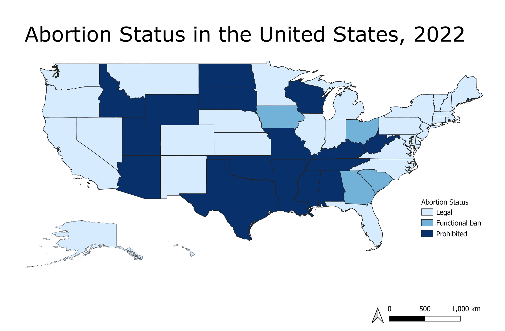

Final Report
Motivation
The motivation behind this project comes from the consistent political discourse around abortion laws. Abortion laws in the United States has a long history of being politicized, often being brought up as a leading point in Women’s Rights advocacy. When Roe v Wade, one of the most important and groundbreaking pieces of legislation to ever be enacted regarding abortion, was overturned in June 2022 this created an uproar. We started to see abortion facilities decreasing in Red states and stricter laws being enforced. With both midterm elections and the new major threat to reproductive rights happening in 2022, our group found this to be a timely and pressing public health issue to address.
Initial Questions
Based on the available data we were interested in answering the following questions:
- How has voter turnout and eligibility changed by state between 2018 and 2022?
- Since the overturn of Roe v Wade how has accessibility to abortion clinics changed between June 2022 and July 2022?
- How do abortion laws and restrictions differ among each state?
Data Processing and Cleaning
Cleaning the data sets
Abortion Clinic Distances By County and State: dataset
clinicdist =
read_csv("datasets/2022.10.01_abortionaccess_countyxmonth.csv")
countydist_change =
subset(clinicdist, year == 2022 & (month == 6 | month == 7)) %>%
select(origin_county_name, origin_state, year, month, distance_origintodest) %>%
mutate(
month = month.abb[month]
) %>%
pivot_wider(
names_from = "month",
values_from = "distance_origintodest") %>%
mutate(
dist_change = Jul - Jun
)
statedist_change =
aggregate(dist_change ~ origin_state, countydist_change, mean)
statedist_Jun =
aggregate(Jun ~ origin_state, countydist_change, mean)
statedist_Jul =
aggregate(Jul ~ origin_state, countydist_change, mean)
statedist =
merge(statedist_Jun, statedist_Jul, by = c("origin_state")) %>%
merge(statedist_change, by = c("origin_state"))
write.csv(statedist,"data_cleaned/statedist_final.csv", row.names = FALSE)Abortion Laws By State: dataset
Abortion restrictions data
2018-2021
First, we read in the data on abortion laws restriction status by
state 2018-2021 found here. The
bans2018 is then cleaned and tidied to prepare for merging
with other datasets. Note that states that had no abortion restrictions
in 2018 were intentionally coded as . by the original
coder. These were replaced with 0 to reflect their status
for further data analysis. A year and
state_abv variables were created, and Washington DC was
renamed to District of Columbia.
bans2018 <-
read_excel("datasets/abortion_bans_data_Oct 2021.xlsx", sheet = "Statistical Data", range = "A1:H127") %>%
janitor::clean_names() %>%
rename(
state = jurisdiction,
abstatus = prohibit_req) %>%
mutate(
state_abv = state.abb[match(state, state.name)],
state_abv = ifelse(is.na(state_abv), "DC", state_abv),
year = lubridate::year(effective_date),
abstatus = replace(abstatus, abstatus == ".", "0")) %>%
select(state, state_abv, year, abstatus) %>%
filter(year == 2018)
bans2018## # A tibble: 51 × 4
## state state_abv year abstatus
## <chr> <chr> <dbl> <chr>
## 1 Alabama AL 2018 1
## 2 Alaska AK 2018 0
## 3 Arizona AZ 2018 1
## 4 Arkansas AR 2018 1
## 5 California CA 2018 1
## 6 Colorado CO 2018 0
## 7 Connecticut CT 2018 1
## 8 Delaware DE 2018 1
## 9 District of Columbia DC 2018 0
## 10 Florida FL 2018 1
## # … with 41 more rows2022
Next, we read in the 2022 data on abortion restrictions by state
found here. A
year and state_abv variables were added, and
Washington DC was renamed District of Columbia to match the 2018
dataset. Though this dataset was not availabe to download, we were able
to scrape it from the source webpage.
bans_link <- "https://ballotpedia.org/Abortion_regulations_by_state"
bans_page <- read_html(bans_link)
bans2022 <-
bans_page %>% html_nodes("table") %>% .[2] %>%
html_table() %>% .[[1]] %>%
janitor::clean_names() %>%
rename(
state = state_abortion_restrictions_based_on_stage_of_pregnancy,
abstatus = state_abortion_restrictions_based_on_stage_of_pregnancy_2,
threshold = state_abortion_restrictions_based_on_stage_of_pregnancy_3) %>%
mutate(
state = replace(state, state == "Washington, D.C.", "District of Columbia"),
state_abv = state.abb[match(state, state.name)],
state_abv = ifelse(is.na(state_abv), "DC", state_abv),
year = 2022,
abstatus = recode(abstatus, "Yes" = "1", "No" = "0")) %>%
select(- threshold) %>%
slice(-1) %>%
head(51) %>%
arrange(state)
bans2022## # A tibble: 51 × 4
## state abstatus state_abv year
## <chr> <chr> <chr> <dbl>
## 1 Alabama 1 AL 2022
## 2 Alaska 0 AK 2022
## 3 Arizona 1 AZ 2022
## 4 Arkansas 1 AR 2022
## 5 California 1 CA 2022
## 6 Colorado 0 CO 2022
## 7 Connecticut 1 CT 2022
## 8 Delaware 1 DE 2022
## 9 District of Columbia 0 DC 2022
## 10 Florida 1 FL 2022
## # … with 41 more rowsMerge the tables
Finally, we merge 2018-2021 and 2022 datasets together. The resulting dataset is saved as a CSV file to merge with datasets on voter turnout and clinic abortion distances.
abortion_bans <-
full_join(bans2018, bans2022)%>%
arrange(state, year) %>%
pivot_wider(
names_from = year,
values_from = abstatus) %>%
rename(abstatus18 = '2018', abstatus22 = '2022') %>%
write_csv("data_cleaned/abortion_bans_final.csv")## Joining, by = c("state", "state_abv", "year", "abstatus")abortion_bans## # A tibble: 51 × 4
## state state_abv abstatus18 abstatus22
## <chr> <chr> <chr> <chr>
## 1 Alabama AL 1 1
## 2 Alaska AK 0 0
## 3 Arizona AZ 1 1
## 4 Arkansas AR 1 1
## 5 California CA 1 1
## 6 Colorado CO 0 0
## 7 Connecticut CT 1 1
## 8 Delaware DE 1 1
## 9 District of Columbia DC 0 0
## 10 Florida FL 1 1
## # … with 41 more rowsVoter Turnout By State: dataset
The 2022 Voter Turnout dataset was pulled from US Elections Project. The
data was downloaded as an xlsx file and read into R with a range
restriction because the dataset had notes clarifying the data that were
not useful to import into R. The names of variables of interest were
renamed to State, turnout_estimate2022,
turnoutrate2022, voting_eligible_pop2022, and
voting_age_pop2022 because the original names in the
dataset had been confusing. Those four variables plus
state_abv was selected out of the dataset. The other
variables in the dataset involved data on the percent of people who were
eligible to vote based on age, but were ineligible because of other
factors which were not of interest to us so they were not kept in our
final dataset.
The 2022 Voter Turnout dataset was pulled from US Elections Project. This dataset was similar to the 2022 Vote Turnout dataset so an identical cleaning process was conducted.
library(tidyverse)
library(tidyr)
library(readxl)
voting2022_df =
read_xlsx("datasets/2022 November General Election.xlsx", sheet = "Turnout Rates", range = "A2:N54") %>%
janitor::clean_names() %>%
rename(state = x1, turnout_estimate2022 = preliminary_total_turnout_estimate, turnoutRate2022 = preliminary_turnout_rate, voting_eligible_pop2022 = voting_eligible_population_vep, voting_age_pop2022 = voting_age_population_vap) %>%
select(state, turnout_estimate2022, turnoutRate2022, voting_eligible_pop2022, voting_age_pop2022, state_abv)
voting2018_df =
read_xlsx("datasets/2018 November General Election.xlsx", sheet = "Turnout Rates", range = "A2:P54") %>%
janitor::clean_names() %>%
rename(state = x1, turnout_estimate2018 = estimated_or_actual_2018_total_ballots_counted, turnoutRate2018 = estimated_or_actual_2018_total_ballots_counted_vep_turnout_rate, voting_eligible_pop2018 = voting_eligible_population_vep, voting_age_pop2018 = voting_age_population_vap) %>%
select(state, turnout_estimate2018, turnoutRate2018, voting_eligible_pop2018, voting_age_pop2018, state_abv)The two datasets were then merged by the state_abv
variable. New variables were created that were the difference in values
between 2022 and 2018 so that we could see how values changed between
the two elections. These variables are
turnout_estimate_difference,
turnout_Rate_difference,
voting_eligible_difference, and
voting_age_difference. In the merge, there ended up being
two State variables: state.x and state.y. One
of the variables were removed and the other one was renamed to
state.
voting_df =
full_join(voting2022_df, voting2018_df, by = "state_abv") %>%
select(-state.x) %>%
mutate(turnout_estimate_difference = turnout_estimate2022 - turnout_estimate2018, turnout_Rate_difference = turnoutRate2022 - turnoutRate2018, voting_eligible_difference = voting_eligible_pop2022 - voting_eligible_pop2018, voting_age_difference = voting_age_pop2022 - voting_age_pop2018) %>%
rename(state = state.y)
voting_df <- voting_df[, c(6, 5, 1, 7, 11, 2, 8, 12, 3, 9, 13, 4, 10, 14)]
write.csv(voting_df,"data_cleaned/Voting Turnout - Final.csv", row.names = FALSE)Merging the Three Datasets
The final three datasets were merged into one large datasets to
prepare it for analysis. The Abortion Bans dataset was imported into R
from the .csv file. The Voting Turnout datastet was imported into R from
the .csv file and the United States row was removed because none of the
other datasets had an equivalent row. The Distance to an Abortion Clinic
dataset was imported and the origin_state variable was
renamed to state_abv to match the other two datasets since
this was the variable that would be used to join the three datasets.
The Abortion Bans and Voting Turnout datasets were merged first by
the state_abv variable that existed in both datasets. In
the merge, there ended up being two State variables:
state.x and state.y. One of the variables were
removed and the other one was renamed to state. This
combined dataset was then combined with the Distance to an Aborion
Clinic dataset by the state_abv variable that existed in
both datasets. The jun variable was renamed to
clinicdistance_jun and the jul variable was
renamed to clinicdistance_jul to clarify what these
variables were.
library(tidyverse)
library(tidyr)
abortionbans_df =
read.csv("data_cleaned/abortion_bans_final.csv") %>%
janitor::clean_names()
votingturnout_df =
read.csv("data_cleaned/Voting Turnout - Final.csv") %>%
janitor::clean_names() %>%
filter(!row_number() %in% c(1))
statedist_df =
read.csv("data_cleaned/statedist_final.csv") %>%
janitor::clean_names() %>%
rename(state_abv = origin_state)
abortionvoting_df =
full_join(abortionbans_df, votingturnout_df, by = "state_abv") %>%
select(-state.y) %>%
rename(state = state.x)
abortionvoting_df =
full_join(abortionvoting_df, statedist_df, by = "state_abv") %>%
rename(clinicdistance_jun = jun, clinicdistance_jul = jul)
write.csv(abortionvoting_df,"data_cleaned/finalprojectfinaldataset.csv", row.names = FALSE)Exploratory Analysis
Voting Turnout and Eligibility Graphs
abortionvoting_df %>%
drop_na() %>%
ggplot(aes(x = state_abv)) +
geom_point(aes(y = turnout_rate2018, colour = "2018")) +
geom_point(aes(y = turnout_rate2022, colour = "2022")) +
theme(axis.text.x = element_text(angle = 90, hjust = 1)) +
labs(
title = "Voting Turnout Rate in 2018 vs 2022",
x = "State",
y = "Rate Difference",
caption = "Figure 1. Voting Turnout Rate in 2018 and 2022.")
abortionvoting_df %>%
drop_na() %>%
ggplot(aes(x = state_abv)) +
geom_point(aes(y = turnout_estimate2018, colour = "2018")) +
geom_point(aes(y = turnout_estimate2022, colour = "2022")) +
theme(axis.text.x = element_text(angle = 90, hjust = 1)) +
labs(
title = "Turnout Estimate Number in 2018 vs 2022",
x = "State",
y = "Rate Difference",
caption = "Figure 2. Turnout Estimate Number in 2018 and 2022.")
abortionvoting_df %>%
drop_na() %>%
ggplot(aes(x = state_abv)) +
geom_point(aes(y = voting_eligible_pop2018, colour = "2018")) +
geom_point(aes(y = voting_eligible_pop2022, colour = "2022")) +
theme(axis.text.x = element_text(angle = 90, hjust = 1)) +
labs(
title = "Voting Eligibility Population in 2018 vs 2022",
x = "State",
y = "Difference",
caption = "Figure 3. Voting Eligibility Population in 2018 and 2022.")
abortionvoting_df %>%
drop_na() %>%
ggplot(aes(x = state_abv)) +
geom_point(aes(y = voting_age_pop2018, colour = "2018")) +
geom_point(aes(y = voting_age_pop2022, colour = "2022")) +
theme(axis.text.x = element_text(angle = 90, hjust = 1)) +
labs(
title = "Voting Age Population in 2018 vs 2022",
x = "State",
y = "Difference",
caption = "Figure 4. Voting Age Population in 2018 and 2022.")
Abortion Laws and Accessibility Graphs
abortionvoting_df %>%
drop_na() %>%
ggplot(aes(x = state_abv)) +
geom_point(aes(y = clinicdistance_jun, colour = "June")) +
geom_point(aes(y = clinicdistance_jul, colour = "July")) +
theme(axis.text.x = element_text(angle = 90, hjust = 1)) +
labs(
title = "Distance to an Abortion Provider from June to July, 2022",
x = "State",
y = "Distance (Miles)",
caption = "Figure 5. Average Distance from an Abortion Clinic from June to July after Overturn of Roe vs. Wade.")
